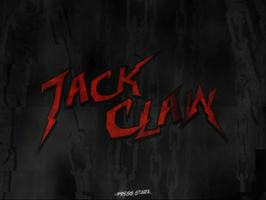
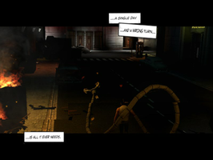
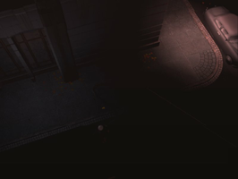
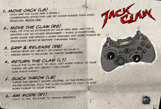
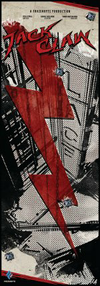

Jack Claw
Dieser Artikel wurde für die folgenden Ubuntu-Versionen getestet:
Ubuntu 14.04 Trusty Tahr
Zum Verständnis dieses Artikels sind folgende Seiten hilfreich:
Jack Claw  ist ein Spiel, welches von Frozenbyte in den Jahren 2006-2008 entwickelt, aber nie fertiggestellt wurde und sich noch im Entwicklungsstadium befindet. Man spielt den gleichnamigen Charakter Jack und kämpft sich durch die Straßen der Stadt. Autos, Laternen und Container werden zu gefährlichen Geschossen...
ist ein Spiel, welches von Frozenbyte in den Jahren 2006-2008 entwickelt, aber nie fertiggestellt wurde und sich noch im Entwicklungsstadium befindet. Man spielt den gleichnamigen Charakter Jack und kämpft sich durch die Straßen der Stadt. Autos, Laternen und Container werden zu gefährlichen Geschossen...
Im Rahmen des Humble Frozenbyte Bundles wurde der Quellcode freigegeben und die Community kann das Spiel aktiv weiterentwickeln. Das Spiel ist für den Xbox 360 Controller optimiert. Jedoch kann es auch mit Tastatur und Maus gespielt werden.
Hinweis:
Das Spiel befindet sich noch in der Entwicklung und es gibt nur ein Level. Die Option um Spielstände zu speichern bzw. zu laden und eine Storyline fehlen derzeit.
|  |  |  |
| Menü | Intro | Spielszene |
Installation¶
Das Paket aus der Aktion Humble Frozenbyte Bundle entpacken [1] und
setup.sh
ausführen [5]. Über claw-bin kann man das Spiel aus dem Installationsordner heraus starten [2]. Auf Wunsch einen Menüeintrag erstellen [3].
|  |
| Belegung Controller XBox 360 |
Steuerung¶
Maus und Tastatur¶
Um das Spiel mit Maus und Tastatur steuern zu können, muss man im Installationsverzeichnis in den Ordner config wechseln und die Datei user_autoexec.dhs bearbeiten [4]. Die Änderungen sehen wie folgt aus:
#!dhs -nopp
// don't touch the line above.
// ***************************************************
// this script has a normal mission script structure, except for
// the two part runcombat sub - which are run before and after the
// actual mission runbefore sub.
script quit_application
sub main
quit
endSub
endScript
script bind_quit_delayed
sub main
// some other proto hacks are overriding these binds, constantly re-binding them
wait 1
setValue 0; unbind tab
//setValue 0; unbind esc
setValue 0; bind run_script_15,f1
setValue 0; bind run_script_16,esc
if
getVariable using_joypad
then
// already using a pad, don't use the joy button 1 to toggle
else
// switch to pad with joy button 1
setValue 0; bind run_script_15,joy-but-1
endif
startScriptProcess bind_quit_delayed
endSub
endScript
script toggle_input
global int,using_joypad
sub main
if
getVariable using_joypad
then
setValue 0; setVariable using_joypad
// set the mouse+keyboard confs
setValue 0; setOptionValue "claw_control_type"
setValue 0; setOptionValue "claw_aim_mode"
setValue 1; setOptionValue "claw_mouse"
setValue 1; setOptionValue "gui_cursor_is_raytracing"
setValue 0; setProfile "Developer"
setValue 0; unbind tab
//setValue 0; unbind esc
setValue 0; bind run_script_15,joy-but-1
setValue 0; bind run_script_15,f1
setValue 0; bind run_script_16,esc
message "Changed to mouse+keyboard configuration (F1 to toggle)"
else
setValue 1; setVariable using_joypad
// set the joypad confs
setValue 1; setOptionValue "claw_control_type"
setValue 1; setOptionValue "claw_aim_mode"
setValue 0; setOptionValue "claw_mouse"
setValue 0; setOptionValue "gui_cursor_is_raytracing"
setValue 0; setProfile "Joypad1"
setValue 0; unbind tab
//setValue 0; unbind esc
setValue 0; bind run_script_15,f1
setValue 0; bind run_script_16,esc
message "Changed to joypad configuration (F1 to toggle)"
endif
endSub
endScript
script user_autoexec
// ---------------------------------------------------
// what to do before combat (when entering the menus)
// called just before mission file parsing.
// (therefore allowing last chance mission file change)
sub runbefore
setValue 0; setOptionValue "claw_control_type";
setValue 0; setOptionValue "claw_aim_mode";
setValue 1; setOptionValue "gui_cursor_is_raytracing";
setValue 1; setOptionValue "console_history_save";
//setValue 0; loadBinds Profiles/Developer/Config/keybinds.txt
setValue 0; setProfile "Developer"
//setMissionFile "Data/Missions/Mission2WTF/mission2wtf.dhm"
//setMissionFile "Data/Missions/Mission3/mission3.dhm"
loadGame "1"
endSub
// ---------------------------------------------------
// what to do when the combat (mission) begins
// just before normal mission runcombat sub
sub runcombat
// nop
bind close_loading_window,button-1
endSub
// ---------------------------------------------------
// what to do when the combat (mission) begins
// shortly after normal mission runcombat sub
// (after unit, light, etc. init)
sub runcombat2
setString "quit_application"
setOptionStringValue "controller_script_16"
setString "toggle_input"
setOptionStringValue "controller_script_15"
startScriptProcess bind_quit_delayed
// hack: bind mouse 2 to camera look mode (for free camera mode)
//bind camera_look_mode,button-2
//bind run_script_16,t
//setString "dev_shot_gui_toggle"
//setOptionStringValue "controller_script_16"
// getMissionIdString
// if
// stringEquals "mission14"
// then
// unpause
// quit
// else
// unpause
// setMissionSuccessCounter 1
// endif
// nop
endSub
// ---------------------------------------------------
// what to do after the combat (mission) has ended
sub runafter
// nop
endSub
// ---------------------------------------------------
endScript
script dev_shot_gui_toggle
global int,dev_gui_hidden
sub main
if
getVariable dev_gui_hidden
then
setValue 0
setVariable dev_gui_hidden
showGUI
else
setValue 1
setVariable dev_gui_hidden
hideGUI
enableControls
endif
endSub
endScript
// ***************************************************
script tuli
sub main
setUnitByIdString "car1"
showUnit
unitPosition
spawnProjectile W_GasoTr
endSub
endScriptOptionen¶
Tastenkürzel¶
| Tastenkürzel | |
| Taste(n) | Funktion |
| Tab ⇆ | Karte |
| U | Upgrade menu |
| L | Log |
| F8 | Spielekonsole |
| Alt + ⏎ | Vollbid- / Fenstermodus |
| Strg + G | Mauszeiger im Fenstermodus einfangen / freigeben. |
| Alt + F4 | Spiel beenden |

Infobox¶
| Jack Claw | |
| Genre: | Actionspiel |
| Sprache: | |
| Veröffentlichung: | 2011 |
| Publisher: | Frozenbyte |
| Systemvoraussetzungen: | - |
| Medien: | Download |
| Strichcode / EAN / GTIN: | - |
| Läuft mit: | nativ |


- Erstellt mit Inyoka
-
 2004 – 2017 ubuntuusers.de • Einige Rechte vorbehalten
2004 – 2017 ubuntuusers.de • Einige Rechte vorbehalten
Lizenz • Kontakt • Datenschutz • Impressum • Serverstatus -
Serverhousing gespendet von